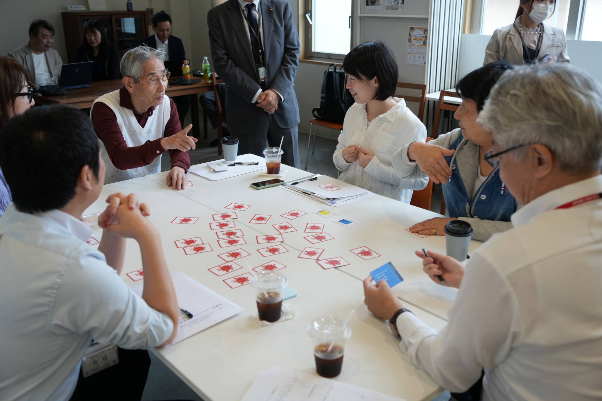

住教育ワークショップ「実家を空き家にしないために～人の終活・家の終活セミナー～」 ＠CAFÉ & SPACE L.D.K.


小田急沿線既存住宅流通促進協議会では、2025年10月、地域美化活動「ふらっとくり〜ん部」の皆さまを対象に、住教育ワークショップ「実家を空き家にしないために 〜人の終活・家の終活セミナー〜」を実施しました。
本ワークショップでは、一般社団法人全国古民家再生協会所属の一級建築士を講師に迎え、空き家の現状や法制度、家族で話し合うことの重要性について、具体的な事例を交えて紹介しました。
講座では、空き家にさせない発生抑制、空き家の利活用、適切な解体除却といった空き家課題解決の考え方に加え、空き家は誰にとっても起こり得る身近な問題であることを共有しました。
また、住まいの将来について家族で早めに話し合うことの大切さや、相続、介護、老後、不動産の扱いを一体で考える必要性についても学びました。
後半では、「住教育カードゲーム」を通じて、参加者が自分の考えを共有するワークショップを実施しました。カードゲームでは、直感的に答える質問、自分や家族の将来を考える質問、選択式の質問などを通じて、住まいや空き家を自分ごととして考える時間となりました。
参加者からは、「家の問題を先送りせず、お正月に子どもたちと話し合いたい」「カードゲームで一個人として何ができるかを自分ごととして捉えることができた」「自治会として空き家課題に意識が持て、地域の方とのつながりの大切さも実感した」といった声が寄せられました。
本取組みは、空き家になる前から住まいの将来を考える発生抑制の取組みであり、地域住民が対話を通じて持続可能な暮らしのあり方を考える、協議会の学び・啓発活動の一つです。